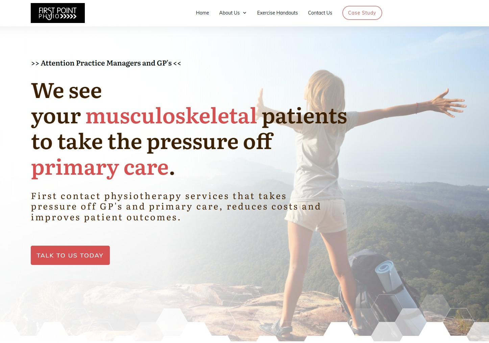
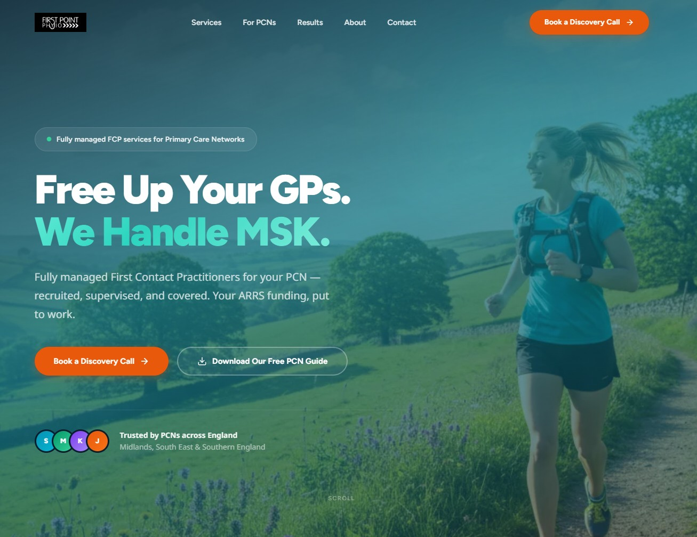
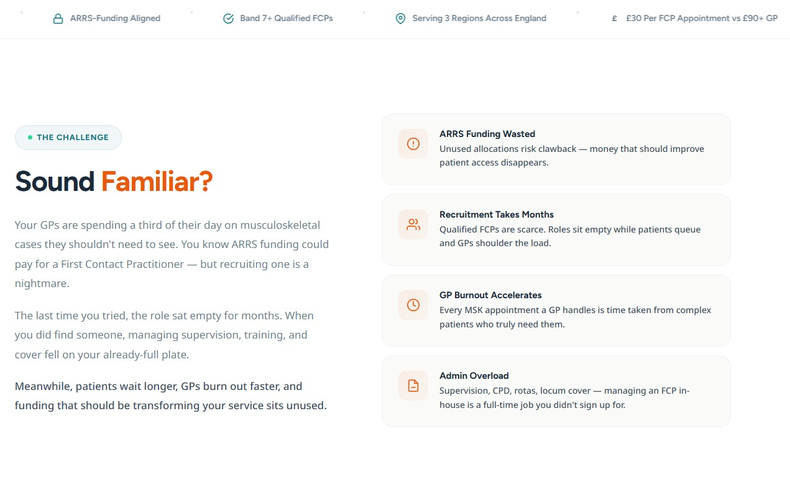
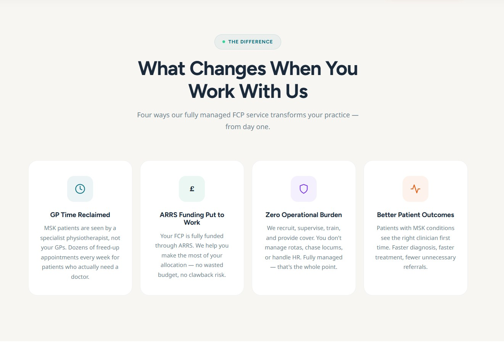
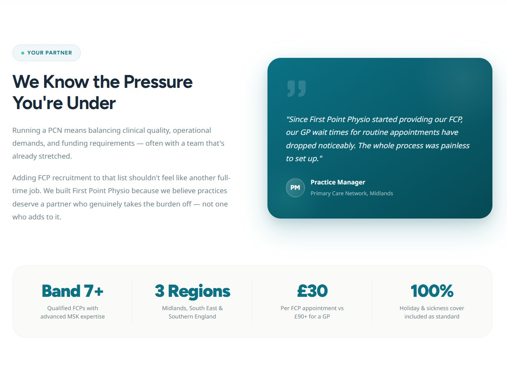
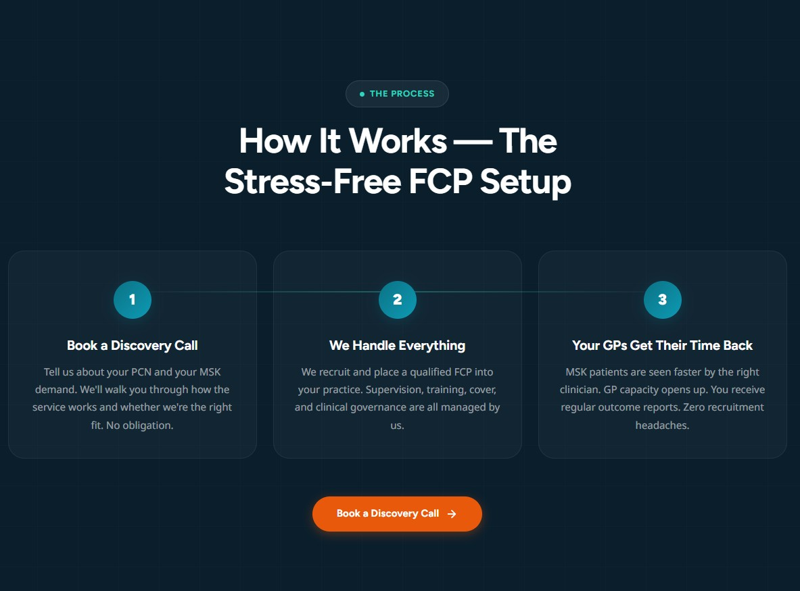
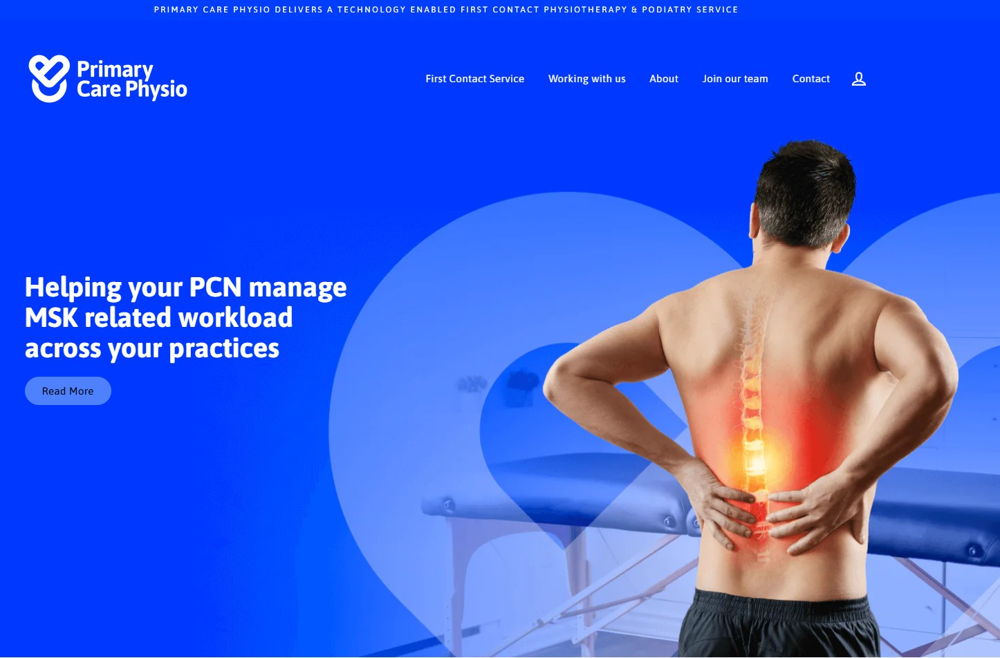

.jpg)
Website Upgrade Proposal
Executive Summary
The current First Point Physio website was built several years ago on WordPress with limited content. It still functions, but it no longer reflects the quality of the service you provide, nor does it work hard enough to win new PCN contracts or attract physiotherapy candidates.
This proposal outlines a complete rebuild on a modern technology platform delivering three things:
- A professional, content-rich marketing presence that positions First Point Physio as the obvious choice for PCNs evaluating FCP providers
- A built-in recruitment management system that streamlines your candidate pipeline and replaces the current module that isn't working effectively
- A sales funnel with automated lead nurture that turns website visitors into warm enquiries through a compelling lead magnet and email sequence
To demonstrate the potential, I've already designed a draft homepage showing the visual quality and example copy for the new site. Screenshots are included in this proposal.
The proposal is structured so you can choose the scope that's right for you — from a core website rebuild through to a full platform with recruitment and marketing automation. All options are priced as simple monthly agreements, consistent with how we already work together.
The Current Situation
The existing website was built on WordPress and launched with minimal content. The plan was always to expand it progressively, but that never happened. Several years on, the site has:
- An outdated design that doesn't reflect the quality of your service
- Only around 6 substantive pages — far less content than every direct competitor
- A recruitment module that doesn't work efficiently, making it harder to manage your most critical operational need
- A CRM and email system that was never activated — the case study download captures leads but no follow-up sequence was ever built
- A document management system for staff policies that appears never to have been used in practice
- No blog, no ARRS funding guide, no detailed service pages — content your competitors all have
- An ageing WordPress platform that requires increasing maintenance effort
The Current Homepage

The current First Point Physio homepage
The site still works, but every day it remains in its current state it represents an opportunity cost — PCN decision-makers see a less professional presence than your competitors, and qualified physiotherapy candidates may choose a provider that looks more established online.
What We're Proposing
A complete rebuild of the First Point Physio website on a modern platform, designed around three priorities:
1. Win more PCN contracts
The new site uses a proven messaging framework that positions the customer as the hero and makes it immediately clear what you offer, how it helps, and what to do next. Every section of the homepage is structured to move a practice manager or clinical director towards booking a discovery call. The site will include dedicated pages for PCN decision-makers, an ARRS funding guide, detailed service pages, case studies, and evidence — all the content your competitors have that you currently don't.
2. Recruit better, faster
Recruitment is your most critical operational challenge. With 47 staff and growing, you need a constant pipeline of qualified physiotherapists. The new site can include a purpose-built recruitment system that replaces the current module — with proper application forms, CV uploads, and a pipeline management board your team can use daily.
3. Generate leads automatically
The current case study download captures email addresses but does nothing with them. The new site can include a properly built sales funnel — a compelling lead magnet, a gated download page, and an automated 6-email nurture sequence that warms prospects and drives them to get in touch. This turns the website from a brochure into an active sales tool.
The technical approach
The new site would be built on a modern stack (Next.js), replacing WordPress entirely. Running both platforms in parallel would increase hosting and maintenance costs, so the upgrade would be all-or-nothing — the new site replaces the old one completely. This gives you a faster, more secure, more maintainable platform that's purpose-built for your needs.
The New Homepage — Preview
I've already designed a complete homepage to demonstrate the quality and direction of the rebuild. Below are screenshots showing the key sections.
Hero Section
Passes the 5-second test: what you offer, how it helps, what to do next.

New homepage hero — clear headline, dual CTAs, trust signals
The Challenge
Names the problem practice managers face, creating emotional resonance.

Problem and stakes section — empathetic, not aggressive
The Difference
Four clear benefits, customer-focused rather than feature-focused.

Value proposition — benefits grid with icons
Your Partner
Empathy statement paired with testimonial and authority stats.

Guide section — empathy and authority combined
The Process
Three simple steps that make working with you feel effortless.

3-step plan — clear path from enquiry to result
Competitive Landscape
Your direct competitors have invested significantly in their online presence. Primary Care Physio — the market leader with 175+ PCNs and 400 staff — has a polished, content-rich website with detailed service pages, case studies, a blog, and dedicated recruitment content.

Primary Care Physio — your largest competitor's homepage
When a practice manager evaluates FCP providers, they will visit both websites. Right now, the comparison works against you — not because your service is worse, but because your website doesn't communicate your quality as effectively.
| First Point Physio (current) | Primary Care Physio | First Point Physio (proposed) | |
|---|---|---|---|
| Detailed service pages | No | Yes | ✓ |
| ARRS funding guide | No | Yes | ✓ |
| Blog / thought leadership | No | Yes | ✓ |
| Multiple case studies | 1 (gated) | Multiple | ✓ |
| Evidence / outcomes data | No | Yes | ✓ |
| Recruitment content | Basic | Detailed | ✓ + Pipeline system |
| Lead generation funnel | No follow-up | Basic | ✓ Automated nurture |
| Mobile-optimised design | Dated | Yes | ✓ |
The proposed new site doesn't just catch up — it surpasses them with a purpose-built recruitment system and automated lead nurture that none of your competitors currently offer.
Add-On: Recruitment Management System
With 47 staff placed across multiple regions, recruitment is your most critical ongoing operational need. The current website has a basic recruitment module, but it doesn't work efficiently. This add-on replaces it with a purpose-built system.
What candidates see
- Professional careers page showcasing what it's like to work as an FCP with First Point Physio
- Individual job listings with role details, location, band level, and requirements
- Clean application form with CV and supporting document upload
- Automatic confirmation email on submission
What your team sees
- A pipeline management board (similar to Trello) with drag-and-drop stages
- Incoming → Screened → Interviewed → Hired → Rejected
- Candidate cards showing name, role applied for, CV download, date applied
- Internal notes on each candidate (visible only to your team)
- Email notifications when new applications arrive
- Filter and search by role, location, or status
This system is designed to be simple and practical — not an enterprise HR platform, but exactly what a team your size needs to stay on top of a rolling recruitment pipeline without spreadsheets or email chains.
Add-On: Sales Funnel & Lead Nurture
The current site has a gated case study download and a basic contacts database — but no email sequence was ever written, and the case study is generic. Every lead that downloads the case study goes cold with no follow-up. This add-on fixes that.
What gets built
1. A compelling lead magnet (PDF guide)
We replace the generic case study with a purpose-built resource: "The Practice Manager's Guide to Outsourced FCP Services." This 8–12 page PDF covers how ARRS funding works with outsourced providers, the real cost comparison of in-house vs managed FCP, what to look for in a provider, and red flags in contracts. It's designed to be genuinely useful — the kind of thing practice managers share with colleagues.
2. A gated landing page
A dedicated download page with strong, benefit-led copy, clear bullet points on what the guide covers, and a simple email capture form.
3. A 6-email automated nurture sequence
Once someone downloads the guide, they receive a carefully written sequence over 2–3 weeks:
- Email 1: Deliver the guide + welcome message
- Email 2: Problem + solution — why most PCNs struggle with in-house FCP recruitment
- Email 3: Social proof — case study summary with real outcomes
- Email 4: Overcome objection — addressing the #1 concern about outsourcing
- Email 5: Insight — the hidden cost of unfilled ARRS roles
- Email 6: Direct ask — book a discovery call
4. Lead tracking
A simple dashboard replacing the current contacts database, showing who downloaded, who opened emails, and who's warming up — so you know which prospects to follow up with personally.
This is the component most likely to generate direct revenue. A single new PCN contract won through this funnel would pay for the entire website upgrade many times over.
The Document Management System
The current WordPress site includes a custom document management system designed to store company policies, allow physiotherapists to acknowledge they've read them, and automatically distribute updated policies to relevant staff.
However, this system appears never to have been used in practice.
Rebuilding it within the new platform would add significant development time and cost. My recommendation is to remove it by default to keep the project focused and affordable. If it turns out to be genuinely needed for your operations, it can be rebuilt as a future addition.
If you'd like to discuss this further, I'm happy to explore whether a simpler solution (such as a shared document library with read-receipt tracking) would meet the underlying need at a fraction of the cost of a full rebuild.
Pricing & Packages
All options are structured as monthly agreements — consistent with how we already work together. The upgrade costs are spread over a 24-month term, after which the monthly rate reduces to an ongoing maintenance level. There are no large upfront invoices.
Option A — Current Site, Updated Rate
If you prefer to stay with the current WordPress site, a rate adjustment is needed. The current rate of £197/month has been unchanged since the site launched and no longer reflects the maintenance requirements of an ageing WordPress platform.
| Monthly cost | £295 /month |
| What's included | Hosting, security updates, WordPress maintenance, basic support |
| Contract | Rolling monthly |
| Content or design changes | None — site remains as-is |
Option B — Website Rebuild (Recommended)
A complete redesign on a modern platform with professional copy, mobile-first design, expanded content, and exercise handout library migration.
| Monthly cost (24-month term) | £375 /month |
| After 24 months | Drops to £275 /month ongoing |
| What's included | Complete website rebuild on modern stack (Next.js), professional copy for all pages, mobile-first responsive design, exercise handout library migration, hosting, maintenance, priority support, ongoing content support and updates |
| Additional vs Option A | Only £80/month more for a completely new website |
Optional Add-Ons
These can be added to Option B at any time — from launch or phased in later.
| Add-on | What's included | Monthly |
|---|---|---|
| Recruitment Management | Candidate application form with CV upload, pipeline board (Incoming → Screened → Interviewed → Hired → Rejected), internal notes, email notifications, search & filter. Replaces current recruitment module. | + £85 /mo |
| Sales Funnel & Lead Nurture | Professional lead magnet PDF (written and designed), gated landing page with conversion-optimised copy, 6-email automated nurture sequence (written and configured), lead tracking dashboard replacing current contacts database. | + £75 /mo |
At a Glance
| Option A — Current site | Option B — Website rebuild | Option B + Both — Full platform | |
|---|---|---|---|
| Monthly cost | £295 | £375 | £535 |
| vs. current £197/mo | +£98 | +£178 | +£338 |
| New website | — | ✓ | ✓ |
| Professional copy | — | ✓ | ✓ |
| Recruitment system | — | Optional | ✓ |
| Sales funnel | — | Optional | ✓ |
| After 24 months | £295 | £275 | £350 |
The full platform at £535/month is less than the cost of a single day of FCP service — and it works for your business 24 hours a day. A single new PCN contract won through the website would pay for years of the service.
Timeline & Next Steps
Estimated timeline
| Phase | What happens | Timeframe |
|---|---|---|
| Kick-off | Confirm scope, gather brand assets, finalise copy review process | Week 1 |
| Copy & Content | Finalise all page copy, write lead magnet and emails (if included) | Weeks 2–3 |
| Design & Build | Build all pages, integrate recruitment system (if included), configure email automation | Weeks 3–6 |
| Review & Testing | Your team reviews, we refine. Mobile, browser, and form testing | Weeks 6–7 |
| Launch | Go live, redirect old URLs, monitor performance | Week 8 |
What I need from you
This project is designed to require minimal time from you and your team:
- A 30-minute kick-off call to confirm scope and priorities
- Access to any existing brand assets (team photos, logos, case study data)
- One round of copy review and feedback
- A nominated person on your team to test the site before launch
To get started
If you'd like to go ahead — or discuss any aspect of this proposal — just let me know. I'm happy to jump on a call or answer questions over email.
The homepage design is already done. Once we agree on scope, I can begin immediately.
Ready to discuss?
Let's talk through the options and find the right fit for First Point Physio.
Get in touch